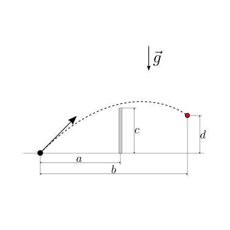

12.9. Problemi#
Questa pagina contiene esercizi di dinamica relativi a diversi argomenti: moto di un punto materiale, moto di sistemi di punti materiali, moto di corpi rigidi in due dimensioni, urti e collisioni, gravitazione, equilibrio e stabilità. Alcuni esercizi richiedono l’uso di principi di conservazione.
Argomenti: vedi alla fine file. Uncomment
moto di sistemi di punti
sistemi estesi con corpi rigidi in 2d
collisioni
gravitazione
equilibrio e stabilità
Una palla di massa \(m\) si trova inizialmente in quiete rispetto a un’osservatore inerziale, a una quota \(h\) sopra la superficie terrestre. La palla viene lasciata cadere dalla condizione di quiete. Viene chiesto di determinare:
la velocità di impatto con il terreno
il tempo impiegato per raggiungere il terreno.
Viene chiesto di svolgere i conti trascurando la resistenza dell’aria. Si chiede poi di: 3. confrontare i risultati ottenuti con i risultati per un corpo di massa \(M > m\) 4. confrontare i risultati ottenuti con i risultati che si otterrebbero nei pressi della superficie lunare.
Raggio Terra: \(R_E = 6380 \, km\) ; massa Terra: \(M_E = 5.98 \cdot 10^{24} \, kg\); Raggio Luna: \(R_M = 1740 \, km\) ; massa Luna: \(M_M = 7.34 \cdot 10^{22} \, kg\);

Soluzione.
Viene chiesto di svolgere l’esercizio precedente, in un ambiente in cui non sia più trascurabile la resistenza aerodinamica del sistema. In particolare viene chiesto di risolvere il problema nel caso in cui la resistenza aerodinamica sia:
proporzionale alla velocità relativa del corpo rispetto al fluido, di intensità \(F = c v\), con \(c = \dots\)
proporzionale al quadrato della velocità relativa del corpo rispetto al fluido, di intensità \(F = \frac{1}{2} \rho S c_F v^2\), con…
Qui si considera il fluido in quiete rispetto all’ambiente: la velocità del corpo relativa al fluido è quindi uguale alla velocità rispetto all’ambiente.
Viene chiesto poi di determinare la velocità limite raggiungibile da un corpo in caduta libera, potendo considerare l’accelerazione di gravità e la densità dell’aria costanti lungo la caduta.
Soluzione.
Un corpo di massa \(m\) viene lanciato con velocità iniziale orizzontale con valore assoluto \(|\vec{v}_0|\), da una quota \(h\) sopra la superficie terrestre. Trascurando la resistenza aerodinamica, viene chiesto di determinare:
gittata
tempo di volo
velocità del corpo all’impatto con il suolo
impulso e forza media quando il corpo raggiunge terra, sapendo che il corpo si arresta in un tempo \(\Delta t\) lungo una traiettoria rettilinea.
Come ulteriore esercizio, si ripetano i conti senza trascurare la resistenza aerodinamica.
Soluzione.
Viene chiesto di determinare:
la gittata massima di un corpo di massa \(m\) e velocità iniziale con valore assoluto \(|\vec{v}_0|\), trascurando la resistenza aerodianmica. Per questa condizione viene chiesto di determinare angolo iniziale rispetto all’orizzontale, tempo di volo e altezza massima raggiunta.
Viene poi chiesto di ripetere lo stesso esercizio: 2. non conoscendo la velocità iniziale, ma che il corpo viene inizialmente lanciato da un meccanismo in grado di applicare un impulso \(I\) noto ai corpi. 3. senza trascurare la resistenza aerodinamica

Soluzione.
Conoscendo la posizione del punto di lancio \(A\), e la posizione del bersaglio \(B\) viene chiesto di determinare:
le condizioni sulla velocità di lancio per colpire il bersaglio. Una volta determinate, viene chiesto di determinare anche il tempo di volo.
tra tutte le velocità ammissibili per colpire il bersaglio, viene chiesto di determinare quella con valore assoluto minimo, sotto al quale non è possibile raggiungere l’obiettivo.
Come ulteriore esercizio, si ripetano i conti senza trascurare la resistenza aerodinamica.

Soluzione.
Conoscendo la posizione del punto di lancio \(A\), e la posizione del bersaglio mobile \(B: \vec{r}_B(t) = x_B \hat{x} + (y_{B,0} + v_{y,B} t) \hat{y}\) viene chiesto di determinare:
le condizioni sulla velocità di lancio per colpire il bersaglio. Una volta determinate, viene chiesto di determinare anche il tempo di volo.
tra tutte le velocità ammissibili per colpire il bersaglio, viene chiesto di determinare quella con valore assoluto minimo, sotto al quale non è possibile raggiungere l’obiettivo.
Come ulteriore esercizio, si ripetano i conti senza trascurare la resistenza aerodinamica.
Soluzione.
Un calciatore deve tirare una punizione in porta da una distanza \(b\). La barriera viene posta a una distanza \(a\) dal punto di tiro e i giocatori in barriera possono coprire fino a una quota \(h\) saltando. Volendo centrare la porta a una quota \(d\) (compresa tra \(0\): la palla tocca terra sulla linea di porta senza rimbalzare prima; e \(d_{max}\) la palla finisce all’incrocio), si chiede di determinare:
velocità iniziale imposta al pallone dal calcio
tempo di volo del pallone tra il calcio e la porta
in tutte le condizioni che permettono di prendere la porta senza colpire la barriera, e senza far rimbalzare il pallone prima della linea della porta. Per ogni valore \(d\), si calcoli poi la condizione che corrisponde al tempo minore.
Si trascuri ogni effetto, dovuto alla rotazione del pallone.
Si svolga l’esercizio prima trascurando e poi considerando la resistenza aerodinamica.
todo Si può ampliare un po” l’esercizio considerando i tempi di reazione del portiere e la velocità nel comprire le distanze? O formulare qualche metodo per stimare la probabilità di realizzazione di calci di punizione…

Soluzione.
Un corpo puntiforme di massa \(m\) è vincolato a una guida semi-circolare con un vincolo bilatero ideale (no attrito, solo reazione normale). Il corpo parte in condizioni di quiete da una posizione identificata da un raggio che forma un angolo \(\theta_0\) con la verticale. Viene chiesto di:
rappresentare il diagramma delle forze agenti sul corpo;
scrivere l’espressione dell’energia meccanica del sistema, considerando il centro della semicriconferenza con punto di riferimento per definire l’energia potenziale gravitazionale nulla;
determinare la velocità massima del corpo nel suo moto
scrivere le equazioni del moto del sistema, usando se possibile: a) le equazioni cardinali della dinamica; b) la legge di conservazione dell’energia meccanica, c) altre leggi di conservazioni di quantità meccaniche costanti nella dinamica del sistema
determinare le reazioni vincolari della guida sul corpo puntiforme in funzione dell’angolo \(\theta\) e daella sua derivata \(\dot{\theta}\)

Soluzione.
Un corpo puntiforme di massa \(m\) è vincolato a una guida ad arco di cerchio con un vincolo bilatero ideale. Viene lasciato cadere da un angolo \(\theta_0\) in condizioni di quiete. L’angolo «di uscita» della guida è \(\theta_1\). Se ragginge l’angolo di uscita, il corpo è libero di compiere la traiettoria caratteristica del moto libero nella prossimità della superficie terrestre. Viene chiesto di determinare:
la velocità massima del corpo lungo la guida,
le condizioni per venire lanciato fuori dalla guida
la traiettoria del moto libero, determinando in particolare la gittata, il tempo di volo e la velocità di impatto.
sapendo che all’impatto il corpo viene rallentato dal terreno lungo una traiettoria rettilinea con una decelerazione costante \(a\), si chiede di tereminare il tempo necessario all’arresto (a partire dall’impatto), l’impulso e la forza media.
Viene chiesto di discutere il problema considerando un attrito dinamico con coefficiente di attrito \(\mu_d\) tra la guida e il corpo, rappresentando il diagramma delle forze agenti sul corpo e determinando le equazioni del moto lungo la guida.

Soluzione.
Una guida è formata da un primo tratto di raggio \(R_1\), un secondo tratto di una circonferenza completa di raggio \(R_2 < R_1\) e un terzo tratto rettilineo orizzontale. Trascurando l’attrito nei primi due tratti, viene chiesto di determinare:
le condizioni necessarie per poter compiere il loop del secondo tratto, nel caso di vincolo bilatero
le condizioni necessarie per poter compiere il loop del secondo tratto, nel caso di vincolo monolatero
la distanza percorsa sul terzo tratto orizzontale, sul quale non è possibile trascurare l’attrito con la guida, rappresentabile con la formula dell’attrito dinamico con coefficiente \(\mu_d\).
Come esercizio aggiuntivo, viene chiesto di discutere il problema del moto del corpo con vincolo monolatero, nel caso in cui non sia in grado di compiere il loop.

Soluzione.
Conoscendo la configurazione iniziale della massa \(m\), viene chiesto di descrivere la dinamica del sistema nel caso di attrito nullo e nel caso di attrito non trascurabile. Viene chiesto di:
determinare le equazioni del moto
risolvere le equazioni del moto
determinare le reazioni vincolari scambiate tra massa e parete obliqua
determinare la forza scambiata tra molla e parete, in funzione del tempo

Soluzione.
Testo

Soluzione.
Testo
Soluzione.
Testo
Soluzione.
Testo

Soluzione.
Testo
Soluzione.
Testo

Soluzione.
Testo
Soluzione.
I due solidi mostrati in figura sono collegati da una molla ideale lineare di costante elastica \(k\). Il sistema è inizialmente tenuto in quiete, con allungamento della molla \(x_0\). Nell’ipotesi sia possibile trascurare l’attrito tra i corpi, viene chiesto di determinare:
le espressioni dell’energia meccanica e della quantità di moto del sistema, e i loro valori
il modulo della velocità massima dei due corpi rispetto a un osservatore inerziale
le equazioni dinamiche del moto, e se possibile risolverle
Soluzione.
Leggi di conservazione. In assenza di attrito tra il solido inferiore e la parete orizzontale, sul sistema formato dai due solidi collegati dalla molla non agiscono forze esterne in direzione orizzontale: è conservata quindi la componente orizzontale della quantità di moto del sistema. In assenza di attrito, sul sistema non agiscono azioni non conservative (gravità è conservativa, molla ideale è conservativa, e la reazione del vincolo non compie lavoro in assenza di attrito): è conservata quindi l”energia meccanica del sistema.
Scelta dei gradi di libertà. Sia \(x\) la posizione relativa della solido 2 rispetto al solido 1, coincidente con l’allungamento della molla; sia \(y\) la posizione del solido 1 rispetto all’osservatore inerziale.
L’energia meccanica del sistema è data dalla somma della sua energia cinetica e dalla sua energia potenziale, qui dovuta solo alla molla (i baricentri dei corpi non cambiano quota, quindi l’azione gravitazionale non compie lavoro). In un momento generico, quindi
\[E = K + V = \frac{1}{2} m_1 \dot{y}^2 + \frac{1}{2} m_2 \left( \dot{x} + \dot{y} \right)^2 + \frac{1}{2} k x^2 \ .\]e poiché il sistema è inizialmente in uno stato di quiete, l’energia meccanica vale \(E = E_{0} = \frac{1}{2} k x_0^2\).
La quantità di moto del sistema è data dalla somma delle quantità di moto delle sue parti. La componente orizzontale è quindi
\[Q_x = m_1 \dot{y} + m_2 \left( \dot{x} + \dot{y} \right) \ ,\]e poiché il sistema è inizialmente in uno stato di quiete, la componente orizzontale della quantità di moto vale \(Q_x = 0\). Da questa relazione si può quindi ricavare una relazione tra le derivate dei due gradi di libertà,
(12.9)#\[\dot{x} = - \frac{m_1 + m_2}{m_2} \dot{y}\]Usando la relazione (12.9), è possibile riscrivere l’espressione dell’energia meccanica del sistema in funzione solo di \(x\) e \(\dot{y}\)
\[E_0 = m_1 \dot{y}^2 + \frac{1}{2} k x^2 \ .\]Quindi la velocità massima dei due corpi si verifica quando l’allungamento della molla è nullo, \(x = 0\),
\[\begin{split}\begin{aligned} |v_{1,max}| & = |\dot{y}|_{max} && = \sqrt{\frac{E_0}{m_1}} \\ |v_{2,max}| & = |\dot{x}+\dot{y}|_{max} && = \frac{m_1}{m_2}\sqrt{\frac{E_0}{m_1}} \\ \end{aligned}\end{split}\]Le equazioni dinamiche del moto possono essere ottenute ad esempio:
dalle equazioni del moto, come il bilancio della quantità di moto della massa 2, e il bilancio della quantità di moto del sistema composto dalle due masse
\[\begin{split}\begin{cases} m_2 (\ddot{x} + \ddot{y}) + k x = 0 \\ m_1 \ddot{y} + m_2 (\ddot{x} + \ddot{y}) = 0 \end{cases}\end{split}\]oppure, derivando le espressioni dell’energia meccanica e della componente orizzontale della quantità di moto (integrali del moto)
Ad esempio, calcolando le derivate degli integrali del moto,
\[\begin{split}\begin{cases} 0 = \dot{y} m_1 \ddot{y} + m_2 (\dot{x} + \dot{y}) (\ddot{x} + \ddot{y}) + k x \dot{x} \\ 0 = m_1 \ddot{y} + m_2 ( \ddot{x} + \ddot{y} ) = 0 \end{cases}\end{split}\]e usando la relazione (12.9) per esprimere \(\dot{x}\) in funzione di \(\dot{y}\) e semplificare questo ultimo termine nella prima delle due equazioni,
\[\begin{split}\begin{aligned} 0 & = \dot{y} \left[ m_1 \ddot{y} + m_2 \left( - \frac{m_1+m_2}{m_2} + 1\right) \left( \ddot{x} + \ddot{y} \right) - \frac{m_1 + m_2}{m_2} k x \right] = \\ & = \dot{y} \left[ m_1 \ddot{y} - m_1 (\ddot{x} + \ddot{y}) - \frac{m_1 + m_2}{m_2} k x \right] \end{aligned}\end{split}\]e quindi
\[\begin{split}\begin{cases} 0 = m_1 \ddot{x} + \frac{m_1 + m_2}{m_2} k x \\ 0 = m_1 \ddot{y} + m_2 ( \ddot{x} + \ddot{y} ) = 0 \end{cases}\end{split}\]Osservazione. Queste equazioni sono equivalenti a quelle trovate in precedenza con le equazioni del moto, poiché
\[m_2 (\ddot{x} + \ddot{y}) = m_2 \ddot{x} \left( 1 - \frac{m_2}{m_1 + m_2} \right) = m_2 \frac{m_1}{m_1 + m_2} \ddot{x} \ .\]
Testo
Soluzione.
Testo

Soluzione.
Testo
Soluzione.
Testo

Soluzione.
Testo
Soluzione.
A un disco di massa \(M\) e raggio \(R\) e distribuzione di massa uniforme è connessa una massa concentrata \(m\) che può essere rappresentata da una massa puntiforme, posizionata a distanza \(R\) dal centro del disco. Il sistema inizialmente in quiete viene messo in moto da una coppia costante \(C\) fino a raggiungere la velocità angolare di regime \(\Omega\). Viene chiesto di determinare:
il momento di inerzia del sistema rispetto al centro di rotazione
il tempo necessario per raggiungere la velocità angolare \(\Omega\)
le reazioni vincolari in corrispondenza della cerniera
todo Commentare i risultati di questo esercizio con la resistenza a fatica dei materiali
Soluzione.
Il momento di inerzia del sistema rispetto al centro di rotazione è uguale alla somma dei momenti di inerzia del disco e della massa concentrata, todo perché? Il momento angolare è una quantità additiva, ma il momento di inerzia? todo fare riferimento ai valori dei momenti di inerzia di disco e massa
\[I = I^{disk} + I^{mass} = \frac{1}{2} M R^2 + m R^2 \ .\]L’equazione di moto che governa la dinamica dell’angolo di rotazione del sistema \(\theta(t)\) può essere ricavata dall’equazione di bilancio del momento della quantità di moto, usando come polo \(A\) il centro del cerchio (polo fisso, \(\dot{\vec{x}}_A = \vec{0}\))
\[\frac{d L_A}{d t} = M^{ext}_A \ .\]Il momento della quantità di moto è la somma dei momenti della quantità di moto dei due sistemi. La sua componente perpendicolare al piano di rotazione vale
\[L_{A,z} = L_{A,z}^{disk} + L_{A,z}^{mass} = I^{disk} \dot{\theta} + m R^2 \dot{\theta} = I \dot{\theta} \ .\]L’equazione del moto quindi diventa
\[I \ddot{\theta} = C \ ,\]dove la derivata del momento angolare uguaglia la coppia esterna agente sul sistema. Se il sistema parte da una condizione di quiete e la coppia applicata è costante, è possibile integrare l’equazione del moto e trovare
\[\begin{split}\begin{aligned} \dot{\theta}(t) & = \frac{C}{I} \, t \\ \theta (t) & = \frac{1}{2} \frac{C}{I} \, t^2 \\ \end{aligned}\end{split}\]fino al raggiungimento della velocità di regime \(\Omega = \dot{\theta}(t^*) = \dfrac{C t^*}{I}\), nell’intervallo di tempo
\[t^* = \frac{I \Omega}{C} \ .\]Una cerniera cilindrica permette la rotazione del corpo attorno al proprio asse, mentre vincola completamente la traslazione del punto in cui viene connessa, con una forza come reazione vincolare. In un moto piano, la cerniera impedisce la traslazione in due direzioni e la reazione vincolare è una forza che viene determinata dalle sue due componenti nel piano.
Una volta noto il moto del sistema, \(\theta(t)\), le reazioni vincolari possono essere determinate ad esempio dall’equazione di bilancio della quantità di moto del sistema,
\[\dot{\vec{Q}} = \vec{R} \ .\]La quantità di moto del sistema è uguale alla somma delle quantità di moto delle sue parti. Il centro di massa del disco non trasla, e quindi la quantità di moto del disco è nulla. Usando un sistema di coordinate polari, si può scrivere la quantità di moto del sistema come
\[\vec{Q} = m \vec{v}_B = m R \dot{\theta} \hat{\theta} \ ,\]e la sua derivata,
\[\dot{\vec{Q}} = m R \ddot{\theta} \hat{\theta} - m R \dot{\theta}^2 \hat{r} \ .\]Dal bilancio della quantità di moto del sistema, si ottengono le azioni imposte dal vincolo sul sistema (quelle che agiscono sul vincolo sono uguali e contrarie, per il principio di azione/reazione),
\[\vec{R} = R_r \hat{r} + R_{\theta} \hat{\theta} = \dot{\vec{Q}} = m R \ddot{\theta} \, \hat{\theta} - m R \dot{\theta}^2 \, \hat{r} \ .\]
Testo
Soluzione.
Testo

Soluzione.
Un sistema puntiforme è libero di scivolare su una superficie semi-circolare con attrito trascurabile. Conoscendo la condizione iniziale, \(\theta(0) = \theta_0\), \(\dot{\theta}(0) = \Omega\), viene chiesto di determinare:
la condizione di distacco dalla superficie
la distanza di orizzontale del punto di atterraggio del corpo dopo il volo libero, rispetto alla superficie semicircolare.

Soluzione.
Il vincolo con la superficie è un vincolo ideale monolatero, che agisce solo fino a quando la componente radiale della reazione vincolare è positiva. Fino a quando il vincolo ideale monolatero è attivo - cioè fino a quando la massa scivola sulla superficie - il sistema ha un grado di libertà, qui scelto come l’angolo \(\theta\). Il distacco del corpo dalla superficie vine determinata dalla condizione \(R_r(\theta^*) = 0\). Successivamente al distacco, il sistema ha due gradi di libertà mentre compie un moto libero in un campo gravitazionale.
L’equazione di bilancio del momento della quantità di moto rispetto al centro della circonferenza permette di determinare un’equazione pura del moto del sistema
\[\frac{d L_{A,z}}{d t} = M_{A,z}^{ext} \ ,\]e quindi
\[m R^2 \ddot{\theta} = m g R \sin \theta\]con le condizioni iniziali definite dal problema. Oppure, la conservazione dell’energia meccanica
(12.10)#\[E = m g R \cos \theta + \frac{1}{2} m R^2 \dot{\theta}^2\]in assenza di azioni non conservative, permette di ricavare immediatamente una relazione tra \(\theta\) e \(\dot{\theta}\). L’equazione di bilancio della quantità di moto permette invece di determinare le reazioni vincolari,
\[\dot{\vec{Q}} = \vec{R}^e \ ,\]\[\begin{split}\begin{aligned} R_r \hat{r} + \underbrace{R_{\theta}}_{= 0 \text{ no friction}} \hat{\theta} + m \vec{g} & = \dfrac{d}{dt} \left( m R \dot{\theta} \hat{\theta} \right) = \\ & = m R \left( \ddot{\theta} \hat{\theta} - \dot{\theta}^2 \hat{r} \right) \end{aligned}\end{split}\]e quindi le due componenti radiale e tangenziale diventano
\[\begin{split}\begin{cases} r: \ R_r = m g \cos \theta - m R \dot{\theta}^2 \\ \theta: \ m g \sin \theta = m R \ddot{\theta}^2 \\ \end{cases}\end{split}\]La componente tangenziale è equivalente all’equazione pura del moto; la componente radiale fornisce l’espressione della reazione vincolare in funzione di \(\theta\) e \(\dot{\theta}\). Usando la relazione (12.10) per esprimere \(\dot{\theta}\) in funzione di \(\theta\), si può scrivere la reazione normale in funzione del solo \(\theta\)
\[\begin{split}\begin{aligned} R_r & = m g \cos \theta - m R \dot{\theta}^2 = \\ & = m g \cos \theta - \frac{2}{R} \left( E - m g R \cos \theta \right) = \\ & = 3 m g \cos \theta - \frac{2 E}{R} \ . \end{aligned}\end{split}\]La condizione \(R_r \ge 0\) equivale quindi alla condizione
\[\cos \theta \ge \frac{2}{3} \frac{E}{m g R}\]Nel caso in cui il sistema è inizialmente in corrispondenza del punto più alto della superficie e in quiete (o quel minimo di velocità per allontanarsi dalla posizione di equilibrio instabile), l’energia meccanica del sistema è \(E = m g R\) e l’angolo limite \(\theta^*\) ha coseno e seno
\[\begin{split}\begin{aligned} \cos \theta^* & = \frac{2}{3} \frac{E}{mgR} = \frac{2}{3} \\ \sin \theta^* & = \sqrt{1 - \cos^2 \theta^* } = \frac{\sqrt{5}}{3} \\ \end{aligned}\end{split}\]e la sua derivata vale
\[\begin{split}\begin{aligned} \dot{\theta}^* & = \sqrt{ \frac{2}{m R^2} \left( E - m g R \cos \theta^* \right) } = \\ & = \sqrt{ \frac{2}{m R^2} \left( m g R - m g R \frac{2}{3} \right) } = \sqrt{ \frac{2}{3} \frac{g}{R} } \ . \end{aligned}\end{split}\]Il moto libero è determinato dalle equazioni del moto
\[\begin{split}\begin{cases} m \ddot{x} = 0 \\ m \ddot{y} = -m g \\ \end{cases}\end{split}\]con le condizioni iniziali
\[\begin{split} \begin{cases} x(t_0) = R \sin \theta^* \\ y(t_0) = R \cos \theta^* \end{cases} \quad , \quad \begin{cases} v_x(t_0) = R \dot{\theta}^* \sin \theta^* \\ v_y(t_0) = - R \dot{\theta}^* \cos \theta^* \end{cases} \end{split}\]
Testo

Soluzione.
Testo

Soluzione.
Testo